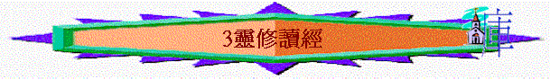
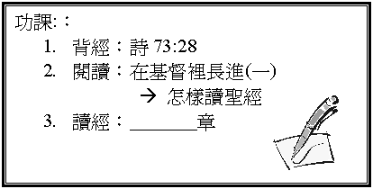

經文 詩七十三：23-28
一．
靈修的定義(v.28)
有沒有聽過「靈修」這字眼？ 何謂「靈修」？
二．
靈修的原因
基督徒為何要靈修？ 親近神有什麼益處？
1.
神是我所愛的 － 得見神 (v.25)
2.
神是我的力量 － 得力量 (v.26)
3.
神是 － (v.26)
4.
神是 － (v.24)
5.
神是 － (v.28)
若你今天來到神面前，你最想得著什麼？
三．
靈修的內容？
1.
細讀經文（詩
119:146-148）
²
選擇次序上
──先讀新約而後讀舊約，並由淺入深。
²
經文的篇幅
──平均最長約一章
²
不明白的經文──多讀幾遍，並祈禱求 神開啟我們的心。
²
深刻的經文
──可作記號或間下
2.
默想內容（詩
119:148;1:2）
²
對 神有什麼認識？
²
對自己有什麼幫助及提醒？
實習：試和栽培員一同用
5分鐘
默想＜來11:6＞；試從這節經文 中分享你對 神有什麼認識及對自己有什麼幫助、提醒。
3.
持守行道
(詩
119:146-148)
要實踐聖經的道──知道真理後就要行。
4.
祈禱立志
(詩 5:1-3)
A.
感謝
B.
祈求
C.
立志
＊注意：若該次靈修沒什麼領受，也不要太介懷，因只要能親近神，也是一件快樂的事。
四．
讀經的生活
²
除了每天靈修外，信徒也可以抽額外時間讀經，例如一日看3-4章聖經。讀經和靈修的分別，在於靈修可能注重默想、禱告，選讀的經節較少，而讀經則注重明白整卷／整本聖經的意義，一般可讀的章數較多，及以速讀方法為主。
²
而讀經有什麼好處? 試從提後3:15-17 找出讀經三個好處
1.
2.
3.
※注意地方：
²
可從舊約創世記開始讀
²
每日3-4章（一年就可以讀完1次聖經）
²
可看一些參考書，先明白刻卷背景，中心思想，大綱結構等
²
每讀完一卷，可問自己：
「整卷書講什麼？有什麼重要真理表達？ 跟前幾卷書有什麼關係？」
²
每次讀經後，可以祈禱結束，將該日所領受的，化為感謝與立志，呈獻給神。
|
|
靈修 |
讀經 |
|
時 間 |
|
|
|
地 點 |
|
|
|
次 數 （每星期幾多日） |
|
|
